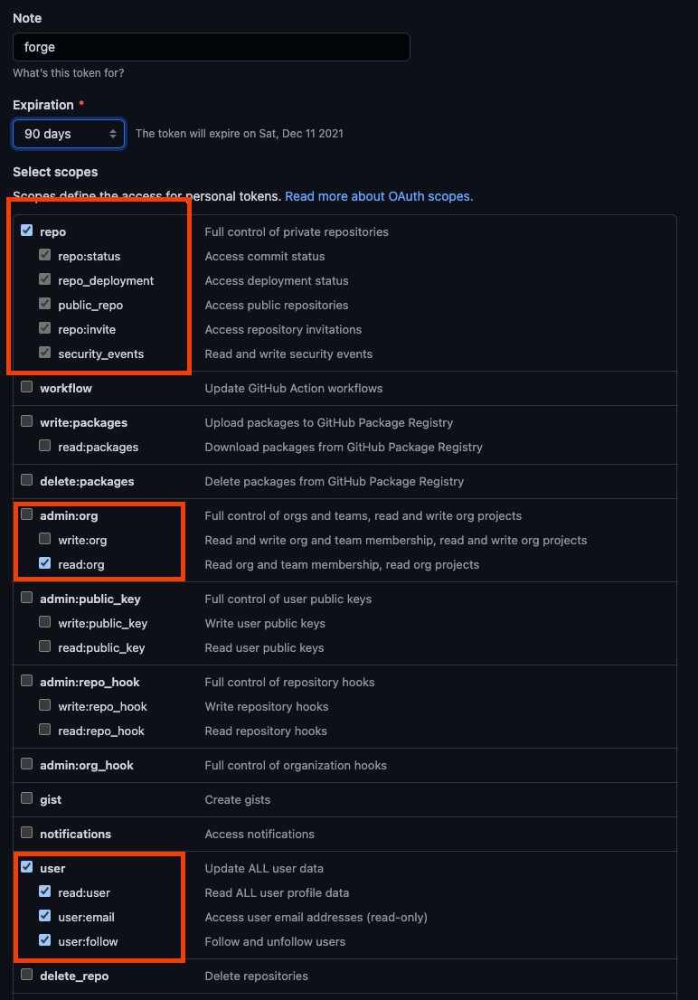
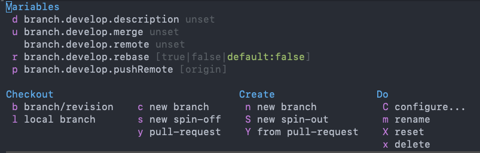

Emacs中使用Forge管理GitHub Pull Request
文章目录
前言
本文会描述如何在 Emacs 中使用 Forge 来管理 GitHub Pull Request 。
配置
在使用之前需要先对 Forge 进行配置，主要有两步，分别是设置 GitHub 用户名和配置 GitHub Access Token
设置GitHub用户名
需要把 USERNAME 改为你的 GitHub 用户名
- 全局设置
git config --global github.user USERNAME - 只对当前仓库设置
git config --local github.user USERNAME
创建GitHub令牌
在创建 Pull Request 时需要用到 GitHub 的 API ，而访问这些 API 需要我们创建一个 TOKEN ，你可以在 Personal Access Tokens 中创建，你需要选择 repo、user、read:org这几个权限。

把创建好的 Token 保存到 ~/.authinfo.gpg 中，格式如下
machine api.github.com login USERNAME^forge password TOKEN
需要把 USERNAME 换成你的 GitHub 用户名， TOKEN 换成刚刚创建的，其它的可以不用动。
使用
在使用之前需要在 Magit Buffer 中使用 M-x 执行 forge-pull 进行初始化
Create Pull Request
要使用 Pull Request 需要有两个分支在远端，假设你在本地开发了一个 develop 分支，并且推送到了远程。
这时候你可以使用 @ c p 来创建一个 Pull Request ，接下来需要选择 Source branch 在这里就是 develop 、 并且选择需要合并的分支 Target branch 这里就是 master 选好之后就可以创建 Pull Request 。
然后你可以到 GitHub 上看看是不是已经创建好了 Pull Request
Merge Pull Request
当别人把功能开发好后，可以使用 b y 把需要的 Pull Request 拉到本地，然后进行 Review

Review 完了如果觉得没问题使用 M-x 然后输入 forge-merge 进行合入
这样你就能在 GitHub 上看到这个 Pull Request 被合入了。